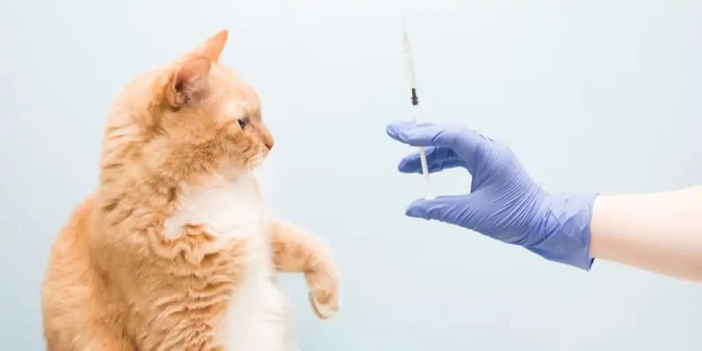

Duyuru Detayları
Kurtarılan bir can daha...

İstanbul Beylikdüzü’nde bir parkta sokak kedisi, başını demir parmaklıklara sıkıştırmış halde bulundu. Olay yerine gelen itfaiye ekipleri kediyi sıkıştığı yerden kurtardı. İstanbul Beylikdüzü’nde bir parkın demir parmaklıklarına kafasını sıkıştıran sokak kedisi, itfaiye ekipleri tarafından kurtarıldı. Kurtarma operasyonu ise cep telefonu kamerasıyla saniye saniye görüntülendi. Beylikdüzü Barış Mahallesi’nde dün sabah saatlerinde bir parkta sokak kedisi, başını demir parmaklıklara sıkıştırmış şekilde bulundu. Kedinin kafasını çıkaramadığını ve halsiz şekilde yattığını gören çevredeki vatandaşlar, durumu itfaiye ekiplerine ihbar etti. Olay yerine gelen itfaiye ekipleri kedinin sıkıştığı yerdeki demirleri, demir makası ile kesti. Yaklaşık bir dakika süren operasyonun ardından kurtarılan kedi, vatandaşlar tarafından veterinere götürülürken Yaşanan o anlar ise çevredeki bir cep telefonu kamerasıyla kaydedildi.
"Köpek Nasıl Eğitilir?" Diye Merak Edenler İçin Detaylı Bir Köpek Eğitimi Rehberi

Köpek sahibi olmak başlı başına bir sorumluluk. Ancak bu sorumluluk tek taraflı bir durum değil. Karşılıklı mutluluk için köpekten beklenen de bazı şeyler var. Bu noktada da "köpek eğitimi" konusu devreye giriyor.Tuvalet eğitimi için ilk önce köpeğimizin evin bir yerine yerleştirilen gazetelere mi yoksa yemekten sonra her sefer dışarı çıkarılınca mı tuvaletini yapmasını istediğimize karar veriyoruz. Buna ilk başta karar vermek lazım çünkü köpek alıştığı zaman değiştirmesi zor oluyor.benim ida'm 2 günlük ankara'ya ameliyat olmaya gittiğinde çok afedersiniz kakasını tutmuş ee geldiğinde dünyanın 8. harikasını gazetelerin üstüne bırakmıştı. bir köpek sahibi olduk ve köpeği ev içerisinde beslemeyi düşünüyoruz.işte bu durumda en büyük sorun köpeğin tuvaletidir. çünkü yavru köpek ihtiyacı geldiği anda oranın neresi olduğunu düşünmeden ihtiyacını giderecektir.buda evde gerçekten tahammülü zor bir koku oluşmasına neden olacaktır.eğitime başlamadan önce köpeğin bir sonraki tuvaletini gene daha önce yaptığı bir yere yapma ilkesinden hareket ederek köpeğimizin ev içerisine daha önce tuvalet yapıp yapmadığına bakarak başlayacağız. eğer köpek ev içerisinde herhangi bir yere tuvalet yapmamış ise sorun yok direk eğitime geçebiliriz. ama eğer köpek tuvaletini ev içerisinde biryerlere yapmış ise öncelikle yapmamız gereken bu yerlerin kökü ve pislik kalmayacak şekilde çok iyi temizlenmesidir.çünkü koku kaldığı takdirde eğitimin bir anlamı kalmayacak ve köpek koku olan yere tekrar tuvaletini yapacaktır. buda boşa harcanmış bir eğitim sürecini getirecektir.evi temizledik ve koku bırakmadık o zaman eğitim sürecine geçebiliriz.
Köpeklerde en çok görülen 8 hastalık

Köpeğinizin bir rahatsızlığının olup olmadığını anlamanız için alışkanlıklarındaki değişikliklere
dikkat etmeniz gerekir. Bazı semptomlar,kusma ya da ishal gibi gözle görülmez ; bunun yerine
bazen yorgunluk, halsizlik, yeme alışkanlıklarında değişim gibi belirtilere rastlanabilir.
Köpeklerde en çok görülen hastalıklar şunlardır:
1-) Kulak İltihabı
Kulak iltihabı en çok İspanyol Cocker ve Bloodhound gibi uzun kulaklı köpek ırklarında görülür.
Fakat sürekli ıslanan veya nemli kalan köpekleri de etkileyebilir.
Eğer köpeğiniz sürekli kulaklarını kaşımaya çalışıyorsa ve kafasını sürekli sallıyorsa ya da
evcil hayvanınız size yaklaştığında kulaklarında kötü kokan sarımsı bir sıvı tespit ederseniz,
muhtemelen kulaklarında iltihap vardır.
...
2-) Köpek Gençlik Hastalığı
Neyse ki, bu hastalığın aşısı var. Fakat oldukça bulaşıcı olan bu hastalık aşılanmamış veya
henüz birkaç haftalık olan köpekler için ölümcül olabilir.
Köpeklerde gençlik hastalığı bazı zamanlar teşhis edilemez, bu yüzden bu hastalığa bin
semptomu olan hastalık da denilir : Öksürük,hapşırma,salya akması,ateş,ishal ve kaslarda
seyirmeler bu hastalığın belirtilerinden bazılarıdır.
3-) Uyuz
Bir tür deri hastalığı olan uyuz, kedilerde, köpeklerde ve hatta insanlarda görülebilir.
Uyuz, akar denilen mikroskobik bir parazitin cilde nufüz edip alt deriye bulaşmasıyla
oluşur.
Köpeklerde sık rastlanan iki tür uyuz vardır : Birincisi başka bir hayvanla temas sonucu
oluşan sarcoptic uyuz, ikincisi ise bağışıklık sistemi ve genetikle bağlantılı olan
demodectic uyuzdur.
4-) İç Parazitler
Köpekleri etkileyen en yaygın solucan grubu tenyalardır. Yatsı bir şekle sahip bu parazitler
hayvanın bağırsaklarında bulunur ve tükettiği tüm gıdalarla beslenir. Bu hastalık bozulmuş,
çiğ veya az pişmiş yiyeceklerin tüketilmesi sonucu oluşur.
Köpeğinizin vücudundaki parazitleri yok etmek için güvendiğiniz bir veterinerin önerdiği
tedavi yöntemini uygulamanız gerekir. Solucanlardan arındırmanız gerekenler sadece yavru
köpekler değildir, yetişkin köpekler de parazitlerden kolayca etkilenebilir. Bazen,
solucanlar köpeğin dışkısında görülebilir ve tespit edilebilir.
5-) Eklem İltihabı
Yaşlı köpeklerde en çok görülen hastalıklardan biri eklem iltihabıdır. Ayrıca, Alman çoban
köpeği ve Doberman gibi köpek ırklarını da etkileyebilir. Dahası, eklem iltihabı özellikle
kalça ve dirseklerde iltihaplanma ve bozulmalara sebep olabilir. Bir köpeğin fazla kilolu
veya hareketsiz olması, eklem iltihabı hastalığına yakalanma riskini artırır.
6-) Parvovirüs ( Kanlı İshal )
Bu hastalık esas olarak hayvanın sindirim sistemini etkiler, fakat aynı zamanda kanlarındaki
kırmızı kan hücrelerinin sayısında azalmaya neden olur ve kalp ve bağırsaklarının düzgün
çalışmasını engeller.
Köpeklerde kanlı ishalin belirtileri arasında kusma,iştahsızlık,dışkıda
kan,yorgunluk,ishal,depresyon,halsizlik ve sıvı kaybı bulunur. Bu hastalık da aşı ile
önlenebiliyor. Fakat bir veterinerin yapması gereken bu aşı, sadece yavru köpeklere
yapılabiliyor.
7-) Mide İltihabı
Köpeklerde mide iltihabı düşündüğünüzden fazla görülür. Ve çoğu zaman evcil hayvan sahipleri
bu hastalığın farkına varmaz. Temel olarak gastrit, mide mukozasının iltihabı veya
tahrişidir. Yanlış beslenme sonucu oluşur: yetersiz beslenme, aşırı fazla porsiyonlar ya da
hayvanının çok hızlı yemesi, çiğnemesi gibi.
Köpeklerde mide iltihabının temel belirtileri kusma ve karında şişliktir,ancak iştah
kaybı,kilo kaybı,enerji eksikliği ve aşırı tükürük üretimine de neden olabilir.
8-] Leyişmanyaz
Bu hastalık sineklerin ısırmasıyla bulaşır ve daha çok İspanya ve Avrupa’da görülür.
Leyişmanyaz hastalığının belirtileri çok çeşitlidir ve bulaşmayı önlemek için en iyi yol,
nedeni ortadan kaldırmaktır.
İçi su dolu kapları dışarıda ağzı açık şekilde bırakmayın. Böylece böcekler yumurtalarını
bırakmak için onları kullanamazlar. Sineklerin evinize girmemesi için kapılara ve
pencerelere haşere kovucu sprey sıkın. Evcil hayvanlarınıza pipet yardımıyla sivrisineklere
karşı bir ilaç verebilirsiniz.
"Yavru Kedilerin İhtiyaç Duyduğu Aşılar Nelerdir?
Kedinizin tedavisi çok zor ve ölümcül seyredebilen hastalıklara karşı antikor oluşturması yönünden hayati önem taşıyan aşılar içerisinde, normalde uygulanmayıp yalnızca özel durumlarda uygulananlar da vardır. Bundan dolayı aşılar kendi içerisinde core (zorunlu) ve non-core (zorunlu olmayan) olarak ikiye ayrılıyor. Birçoğu her sene bir kez tekrarlanan zorunlu aşılar, herhangi bir koşul gerektirmeksizin yapılması gerekiyor. Bu aşılar felin panlökopeni, felin herpesvirüs, felin kalisivirüs ve kuduzdur. Ülkemizde felin lösemi aşısı zorunlu olmayan aşılar kategorisindedir. Bunların yanında klamidya felis, bordetella ve FIV aşıları zorunlu olmayan aşılar kategorisindedir.
Karma aşısı 3 veya 4 doz şeklinde uygulanabilir. Aynı aşının iki dozu arasında maksimum 21 gün olmalıdır. Aşıların 2. dozuyla birlikte vücuttaki antikor seviyesinin maksimuma çıkması amaçlanmaktadır. Gerektiğinden daha uzun süre geçmiş aşıların tekrarlanması gerekir. Bu da kediniz üzerinde ekstra bir aşı yükü oluşturmaya sebep olmaktadır.
Evde Balık Beslemenin 7 Püf Noktası

Öncelikle fanus yerine bir akvaryum tercih etmenin daha doğru olacağına ikna olmakta fayda var. Sonrasında balığın cins ve karakterine göre bir yaşam alanı oluşturun. Balığın günde kaç defa, ne miktarda yem ile beslenmesi gerektiğini iyi belirlemeniz gerekmektedir. Kararında belirlenmeyen yem miktarı, balığın ölümüne bile neden olabilir, bu nedenle özenli olmakta fayda vardır. Kalitesiz ve açık yemler, sağlıksız bir şekilde beslenmelerine neden olacaktır. Küçük ya da pul şeklinde olan kaliteli yemleri tercih ederek balığın direncini çoğaltıp daha sağlıklı olmasına yardımcı olabilirsiniz. Balığı ister akvaryum ister fanusta yetiştiriyor olun her şekilde suyun kalitesinin önemli olduğunu unutmayın. İçilebilir ve klor barındırmayan bir su kullanmakta ısrarcı olun.Akvaryum ya da fanusun içerisine gereksiz yere elinizi sokmak, balığın ürküp strese girmesine neden olacaktır. Her ne kadar zaman zaman onunla temas içinde olmayı isteseniz bile bu durumun onun için iyi olmadığını unutmamalısınız. Akvaryum ya da fanus suyunun en az haftada bir kez değişmesi gerekmektedir. Balıkların huzur ve sağlık içinde yüzebilmesi için suyun temizliği oldukça önemlidir. Su değişiminin yanı sıra temizliğin daha detaylı olabilmesi için temizleyici bir filtre edinmekte fayda vardır. Filtreyi akvaryum boyutuna göre seçmeye özen gösterin. Balığın yalnız kalmasına gönlünüz razı olmuyor, yeni bir arkadaş edinmesini istiyorsanız yeni balığın sağlıklı olmasına dikkat etmelisiniz. Hasta bir yeni balık diğer balığın da hasta olmasına neden olacak işleri oldukça zorlaştıracaktır.

Kübra Emek
3 gün önce orta boy bir akvaryum ve 10'a yakın balık alıp beslemeye başladım. Süslü püslü akvaryumları, içinde bitkileri, taşları ve suya hava gönderen bir aletleri var. (oksijen ve suyun temizlenmesi için sanırım?) Beslenmelerinde de sorun yok. Fakat her sabah kalktığımda 1-2 balık ölmüş oluyor. Suyun dezenfekte edilmesi için kullandığım mürekkep benzeri bir ilaç var. Bununla ilgili olabilir mi ölümleri? Ya da neden?
3 Yorum

Ahmet Yılmaz 01 Mart 2022/12:00
Merhabalar
6 ay önce 3 aylık yavru olan rus finosu cinsi köpeğimi eğitemiyordum . Sadece
tuvalet eğitimi verdim mamasını dahi kendi yemiyor elimle yedirmek zorunda kalıyorum .
Gel , dur , hayır gibi komutların hiçbirini aktaramadım hayvana internette okuduklarımın
hepsini denedim. Özellikle mama yedirememem ve gel komutunu öğretememem çok sorun
yaratıyordu.
Kübra Emek 12 Şubat 2022/15:20
3 gün önce orta boy bir akvaryum ve 10'a yakın balık alıp beslemeye başladım. Süslü püslü akvaryumları, içinde bitkileri, taşları ve suya hava gönderen bir aletleri var. (oksijen ve suyun temizlenmesi için sanırım?) Beslenmelerinde de sorun yok. Fakat her sabah kalktığımda 1-2 balık ölmüş oluyor. Suyun dezenfekte edilmesi için kullandığım mürekkep benzeri bir ilaç var. Bununla ilgili olabilir mi ölümleri? Ya da neden?
Yorum Yazın
En Son Duyurular